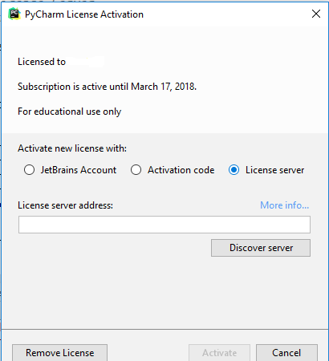
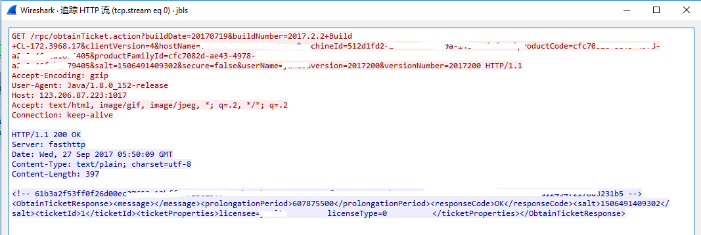
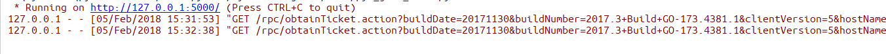

JetBrains License Server原理及40行Python代码的实现
文章目录
Repository:
估计是个程序员都应该使用过JetBrains的IDE（尤其是Python程序员吧）。JetBrains的产品线非常丰富，PHP的PHPStorm，前端的Webstorm，Python的Pycharm，Java的IntelliJ，Ruby的RubyMine，Go的Goland，数据库的DataGrip……
几个月之前，我曾经尝试着把Java版本的License Server 移植到Python，但是失败了。但是今天我就成功了……好了不废话了，咱来一步一步的学习下怎么用40行代码写一个JetBrains License Server
JetBrains License Server激活流程
打开IDE，依次点击Help-Register，输入服务器地址，点击Activate

这时就会从 License Server取得一个Ticket了。
抓包与分析
网上已经有人写好了几个版本的授权服务器，我参考了Java版的、golang版的还有JavaScript版的。
于是我找了那个能用的Java版本的，自己搭建，然后尝试激活、抓包并过滤http，进行分析。
通过追踪HTTP流我们能发现，IDE向指定服务器发起了一个GET请求，请求中包含很多参数，之后服务器返回了一个像是散列值，还有一小串XML

IDE请求：
GET /rpc/obtainTicket.action?buildDate=20170719&buildNumber=2017.2.2+Build+CL-172.3968.17&clientVersion=4&hostName=xxxxxxm&machineId=51xxxxx20a-14d259f1fc94&productCode=cfc7xxxx978-a2a2-46fxxxx405&productFamilyId=cfxxxx-ae43-4978-a2a2-46feb1679405&salt=1506491409302&secure=false&userName=xxxx&version=2017200&versionNumber=2017200
服务器返回：
<!-- 61b3a2f53ffxxxxxxxxx6b132e0270275d12434f217ba3231b5 -->
<ObtainTicketResponse><message></message><prolongationPeriod>607875500</prolongationPeriod><responseCode>OK</responseCode><salt>1506491409302</salt><ticketId>1</ticketId><ticketProperties>licensee=xxxxx licenseType=0 </ticketProperties></ObtainTicketResponse>
由此我们可以很清楚的了解到激活的步骤：请求+相应+验证，那么大体猜测一下应该是服务端持有一个私钥，对请求字符串进行加密，然后返回，客户端使用公钥验证。
验证猜想
为了验证我们的猜想，咱其实是要去读其他版本的源代码的……鉴于这个流程挺复杂，要求你会多门语言，所以咱就不演示了……总之，经过我的研读，我发现的细节是这样的：
服务端构造如下的字符串：
<ObtainTicketResponse><message></message><prolongationPeriod>607875500</prolongationPeriod><responseCode>OK</responseCode><salt>1506491409302</salt><ticketId>1</ticketId><ticketProperties>licensee=xxxxx licenseType=0 </ticketProperties></ObtainTicketResponse>
其中salt是发起请求时的时间戳（单位毫秒），licensee是发起请求的用户名（其实这个用户名是随便的，在代码里写死也是可以的）。
然后服务器使用RSA with MD5 and PKCS1v15进行加密，把加密后的内容转换为十六进制，加上HTML注释<!-- hex -->（注意前后的两个空格），把十六进制HTML注释和构造的字符串一起返回，客户端使用hex和返回的字符串（以及公钥）进行验证。
其实验证猜想的这一步才是最复杂的，需要参考很多源代码做出适当的实验。
既然猜想已经得到了证实，那么剩下来就开始写了。基础的结构很简单，用flask搭建一个简易的服务器，用cryptography完成密码学相关的操作。
cryptography完成RSA签名与十六进制转换
Python中比较安全好用的密码学库是cryptography（唉 好吧）、pycrypto（这货很久不更新了，不敢用），顺便说一句，进行安全随机盐散列函数的有passlib。
首先需要引入对应的库
from cryptography.hazmat.backends import default_backend
from cryptography.hazmat.primitives import hashes
from cryptography.hazmat.primitives import serialization
from cryptography.hazmat.primitives.asymmetric import padding
然后载入key（文件形式）
with open('jbls_private_key.pem') as f:
private_key = serialization.load_pem_private_key(f.read(), password=None, backend=default_backend())
执行加密
i = bytes(content)
signature = private_key.sign(i, padding.PKCS1v15(), hashes.MD5())
转换二进制为十六进制表达
binascii.hexlify(signature)
大概这么五行，我们就完成了加密与转换操作，剩下我们只要在Flask端做一下逻辑处理就好了。
Flask进行逻辑处理
这一步也很简单，用@app.route()装饰器确定路由，构造字符串与返回。真的是很简单，大概就是如下这么十几行：
@app.route("/rpc/obtainTicket.action")
def obtain():
salt = request.args.get('salt')
user_name = request.args.get('userName')
content = "<ObtainTicketResponse><message></message>" + \
"<prolongationPeriod>607875500</prolongationPeriod><responseCode>OK</responseCode>" + \
"<salt>" + salt + "</salt><ticketId>1</ticketId>" \
"<ticketProperties>licensee=" + user_name + "\tlicenseType=0\t</ticketProperties>" \
"</ObtainTicketResponse>"
verification_hex = hex_signature(content)
return "<!-- " + verification_hex + " -->\n" + content
通过Flask的requests拿到salt和username，构造XML，调用函数，返回hex以及XML。
所以加起来，整体代码真的只有不到40行。就算把KEY嵌入到源代码中，也只是43行而已……
最终结果
服务端的请求日志

客户端显示激活成功
附录与FAQ
监听0.0.0.0
如果想要把这个服务部署在服务器上，那么最好就监听0.0.0.0，只需要把app.run()写成 app.run(host='0.0.0.0')即可。
持久运行
当然我们希望这个Flask程序能够长期运行而不退出，此时我们最好使用supervisor或者systemd啦，详细参考此篇《Linux 怎么让程序持续运行：简单说说几种好玩的办法》
示例源代码
本示例源代码可以到下面的地址查看：
为啥不放到GitHub呢？被DMCA Takedown啦ε=ε=ε=┏(゜ロ゜😉┛
需要注意的是，需要使用pip安装cryptography、flask，并且jbls.py同时支持Python 2和Python 3.
可否提供一个有效的私钥
不好意思，不提供……至于我这个测试的私钥是在哪找的……你们猜呀。
如何生成exe文件
使用pyinstaller就可以了。
pyinstaller -F demo.py
travis-ci
我们用travis-ci做持续集成测试，但是travis-ci并不是为了运行程序而准备的。但是我们这个Flask应用还必须得运行才能测试。那咋办呢？subprocess.Popen()？反正各种奇技淫巧都试过了，不好用的。劝大家还是试试app.test_client().get(url).data吧，这样就能获取到响应然后assert了。
新版JetBrains License Server备注
以下内容全文引用自lanyus评论
贵站居然没有过滤html的特殊字符？重新发一下吧，以下是原文：
Jetbrains家产品线激活服务器认证从2018.2开始使用两个handler来处理，第一个handler会对老的签名方式进行认证（<!-- abcdef1234567890 --><ObtainTicketResponse></ObtainTicketResponse >类样式），该handler会判断签名是否包含hex之外的字符。如果没有，按老版本方式来验证签名，如果存在hex之外字符则抛异常由自己接住后进入第二个handler来验证。
从版本2018.2.1开始便去掉了第一个handler，改为只由第二个handler来验证，由此老的验证服务器全面失效。
来说说第二个handler的验证逻辑吧：
新的报文返回还是形同：<!-- sign_body --><xxxResponse></xxxResponse>，其中<xxxResponse></xxxResponse>这样的响应正文中相比较老版本添加<serveruid>xyz</serveruid>配置，这个xyz后文中有用到，不可缺少。
sign_body格式较老版本的hex字符串变动很大，其示例格式如下：SHA1withRSA-xxxxxxxxxxxxxx-yyyyyyyyyyyyyyy，以-符号分隔，SHA1withRSA对应java中签名所使用的算法（可换为MD5withRSA等），xxxxxxxxxxxxxx部分是使用该算法以私钥签名的bin -> base64字符串，yyyyyyyyyyyyyyy部分则是pem格式的证书字符串（可直接放证书正文，不换行）。
其中yyyyyyyyyyyyyyy证书必须由Jetbrains产品内置的一个CN为License Server CA的CA证书签发才有效，而且yyyyyyyyyyyyyyy证书中必须包含CN=xyz.lsrv.jetbrains.com(其中xyz对应前文<serveruid>xyz</serveruid>部分所填)。
证书验证通过后才会取出证书中所包含的公钥来验证签名<xxxResponse></xxxResponse>响应正文（和base64Decode(xxxxxxxxxxxxxx)比对），验证通过后继续完成服务器认证（解析正文内容，逻辑同旧版）。
啰啰嗦嗦这么多，总结一下：如果我们想要自己造验证服务器，则需要拿到一张License Server CA签发的证书（包括私钥），而且这个证书被Jetbrains发现可能会被吊销！所以这个恐怕有些痴人说梦了。
对了License Server CA证书的内容由另一张Jetprofile签发的叫prod3y的证书公钥定时校验（数据格式同上文所述，不过正文部分是CA证书字符串），应该是防止被替换吧。
还有类似idea.lanyus.com这样的认证服务器域名黑名单也由这张prod3y证书公钥定时校验，也是怕被篡改吧。如果要替换CA要从替换prod3y证书开始，但那是破解的内容了，不如注册服务器优雅。
就这么多。
所以估计License Server这条路可能走不通了，只能通过javaagent这种方法修改客户端（IDE）代码然后达到目的了。
本站默认采用CC-BY-NC-SA 4.0协议进行授权 转载必须包含本声明，并以超链接形式注明原作者和本文原始地址


评论
52 条评论